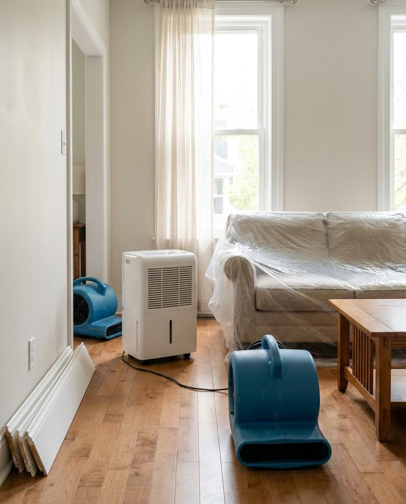
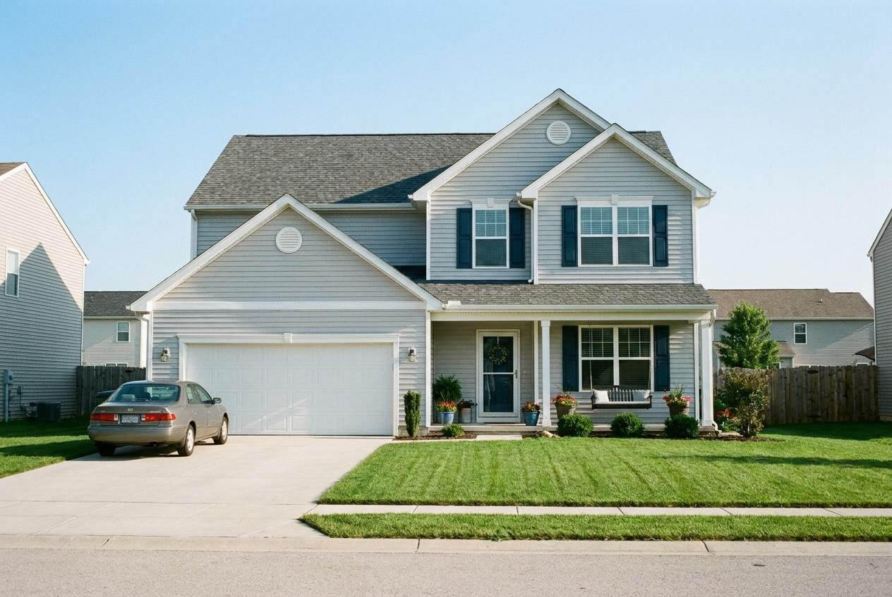

Reviews


Your home is your biggest investment, and water damage threatens everything inside it. Troy Restoration Co protects Troy homeowners with comprehensive residential restoration that covers extraction, drying, and full property recovery.
We provide every water damage restoration service your home needs, backed by transparent pricing.
Rebuilding what water ruined: drywall, flooring, insulation, cabinets and paint.
Learn MoreExpert mold remediation in Troy, NY. IICRC-certified, air quality testing.
Learn MoreStopping water damage from getting worse before any repair work begins.
Learn MoreProfessional storm damage repair in Troy, NY. Water intrusion, roof damage & restoration.
Learn MoreDay or night help to stop the water and limit the damage to your home.
Learn MoreProfessional flood cleanup in Troy, NY. 24/7 response, insurance assistance.
Learn MoreProfessional structural drying in Troy, NY. Industrial dehumidifiers, daily monitoring.
Learn MoreSpeak with our technicians today, upfront pricing, no surprises.
Call (760) 542-1898Our IICRC-certified technicians handle every residential restoration need, big or small.
Call (760) 542-1898 Now
Water damage can devastate a home in hours, warping floors, destroying drywall, and creating the perfect conditions for mold growth. When something goes wrong, you need a team that responds quickly, diagnoses accurately, and works efficiently. That's exactly what Troy Restoration Co delivers.
Whether you're dealing with a flooded basement threatening your foundation, burst pipes soaking your walls, or appliance leaks spreading across your floors, our experienced technicians have the skills and equipment to handle any residential water damage challenge.
A broken pipe, a leaking appliance, or a storm can flood a house fast, and extraction by professionals remains the safest answer and the fastest one. Troy Restoration Co provides expert residential water extraction throughout Troy, handling everything from minor leaks to full-scale flooding. On each job we assess the damage, pump out the water with industrial equipment, map the moisture, protect your belongings, and document everything for your insurer.
Standing water poses a serious risk to your family, your home, and your belongings. Hardwood starts to cup, wiring begins to corrode, and drywall soaks up water and swells, all in a matter of hours. If left untreated for 24 to 48 hours, mold growth becomes almost inevitable. If you discover standing water in your home, even a small amount, we recommend calling for professional help immediately. A technician will size up how far the water has spread and start removing it before it causes secondary problems.
We also handle water damage caused by hidden leaks that have been ongoing for days or weeks. Walls and subfloors can hide a small leak well, and the framing may be badly damaged by the time a stain or smell appears. To track down trapped moisture and verify everything is dry, our crew relies on thermal cameras and professional-grade meters.
Drying ServicesAfter water gets in, nothing matters more for the long-term health of your house than drying the structure all the way through. Done right, it pulls trapped moisture out of subfloors, wall cavities, and framing, keeps mold from starting, and returns the structure to sound condition. Troy Restoration Co dries every home to the IICRC S500 standard, checking and recording moisture levels each day.
For homes, we bring commercial-grade dehumidifiers and fast air movers, add specialty equipment where hardwood flooring or wall cavities need it, and use thermal imaging to confirm progress along the way. Each home is assessed individually, and our technicians calibrate the drying plan to match your property's specific materials, layout, and damage severity.
Professional drying goes much further than most people expect. The puddles may be gone, but dampness left inside framing, beneath floors, and within walls can feed mold and rot wood for weeks afterward. We monitor moisture levels daily and don't consider the job complete until every reading reaches pre-loss standards. Depending on how much got wet, drying a home usually takes 3 to 5 days.
Mold PreventionWithin 24 to 48 hours of getting wet, materials can start to grow mold, which spreads quickly and can put your family's health at serious risk. Every water damage job Troy Restoration Co takes on includes mold prevention, and we also remediate existing mold as a separate service. Our IICRC-certified technicians follow EPA and IICRC S520 protocols for safe, thorough mold treatment.
Preventive mold treatment belongs in every restoration job, and we recommend it each time. Once mold has settled in, removing it is harder and more expensive than using an antimicrobial treatment during drying. If mold is already visible, or you think an earlier leak left some out of sight, we handle the testing, containment, and removal, then verify the results afterward so your home is healthy again.
Insurance ClaimsFiling a claim is a lot to take on when your house is torn up and your routine is gone. To make the process simpler, Troy Restoration Co deals directly with every major insurance carrier. Our team documents every aspect of the damage, including photographs, moisture readings, affected materials, and restoration steps, and provides comprehensive reports that meet insurance company requirements.
Adjusters need specific information to approve a claim, and after assisting thousands of Troy homeowners we know what that is. Because we document thoroughly and talk to your insurer directly, claims tend to be processed sooner and to account for all of the damage. We're happy to explain your coverage, answer questions, and advocate on your behalf throughout the entire restoration process.
Most homeowner policies cover sudden and accidental water damage such as burst pipes, appliance failures, and storm-related intrusion. We can go through your policy with you so you know what applies and can file a complete claim. Compared with filing on your own, paying a little for professional documentation frequently leads to a significantly higher insurance payout.
Water damage gets diagnosed and repaired properly when IICRC-certified technicians do the work. Early action saves your home and money.
Call (760) 542-1898 Now
A basement filling with storm water or a pipe that lets go at 2 AM cannot wait until the office opens. Day or night, 24/7, Troy Restoration Co sends emergency restoration crews quickly to Troy homes. Each truck comes stocked so the crew can shut off the source, start pulling water out, and keep the damage from spreading.
Documentation is part of the emergency visit too: written assessments, photographs, itemized invoices, and moisture readings prepared to insurance company standards. If you want, we will deal with your adjuster directly, as we have for thousands of homeowners across Troy, to help the claim get a fair review.
Sewage CleanupFew kinds of water damage are as dangerous to a household as a sewage backup. The health risks are serious because Category 3 water, also called black water, carries bacteria and viruses along with other pathogens. Troy Restoration Co technicians are specially trained and equipped to handle sewage cleanup safely, following strict IICRC protocols for contaminated water restoration.
We contain the affected area, extract the contaminated water safely, remove what cannot be saved, apply a thorough antimicrobial treatment, dry the structure completely, and test afterward to verify the home is safe. One team does the whole job so that your family is back in a clean and healthy house without delay.
Call Troy Restoration Co for fast, professional residential water damage restoration throughout Troy.
Call (760) 542-1898 Now